Case 2: Load Balancer as a service¶
A load balancer is a device that acts as a reverse proxy and distributes network or application traffic across a number of servers. Load balancers are used to increase capacity (concurrent users) and reliability of applications.

Configure instances¶
Add rules for SSH, PING, HTTP
Create key-pair (optional)
Launch an instance with centos-7 image e.g. server-1
Launch two more instances e.g. server-2, server-3
Note
You can launch as many instances as you want
Assign floating-ip to each instance
Your dashboard will look like this
SSH to server-1 and run following commands
$ sudo yum install httpd $ sudo systemctl enable httpd.service $ sudo systemctl start httpd.service $ sudo sh -c "echo server 1 > /var/www/html/index.html" $ exit
SSH to server-2 run following commands
$ sudo yum install httpd $ sudo systemctl enable httpd.service $ sudo systemctl start httpd.service $ sudo sh -c "echo server 2 > /var/www/html/index.html" $ exit
SSH to server-3 run following commands
$ sudo yum install httpd $ sudo systemctl enable httpd.service $ sudo systemctl start httpd.service $ sudo sh -c "echo server 3 > /var/www/html/index.html" $ exit
Disassociate floating IPs of server-1, server-2 and server-3.
{kind=link}
Configure Load balancer¶
Navigate to Project > Network > Load Balancers tab in the left side
In the pools tab click on add pool
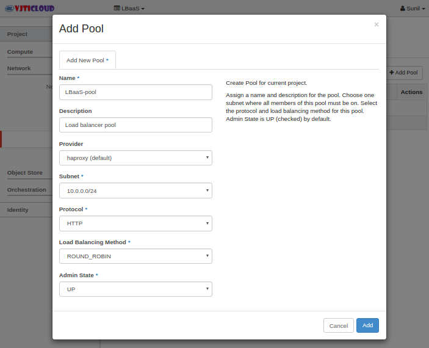add pool and it should be active
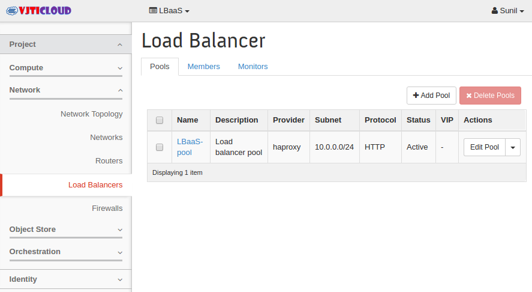Select Members tab and add member
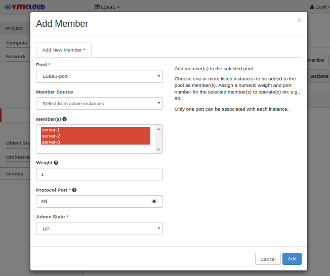Click “Add” and you should see all three members of your pool with Status ACTIVE
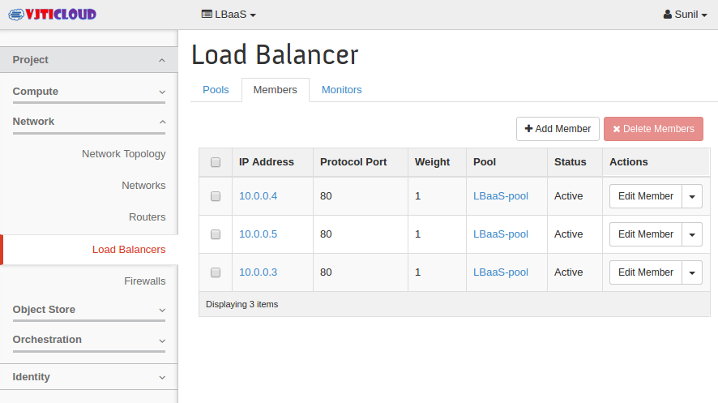Allocate an internal Virtual IP (VIP) address for the load balancer. Click on add VIP as shown in figure
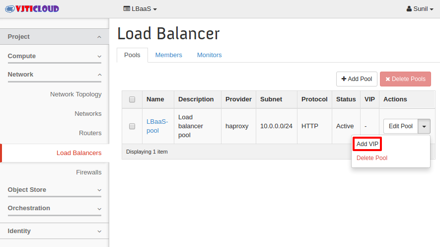fill the details
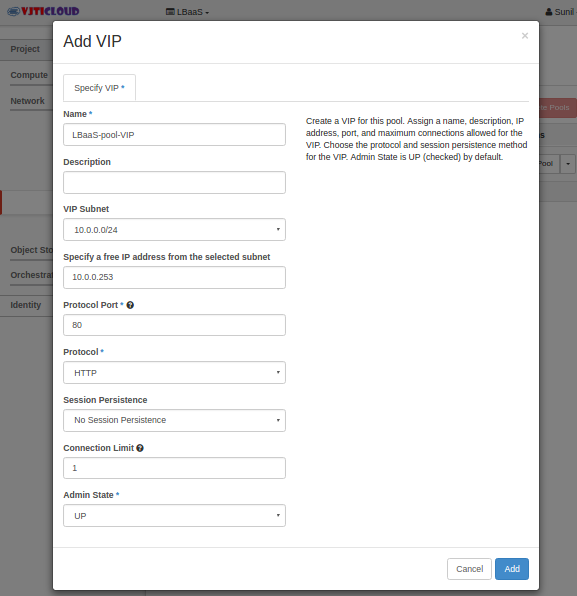To access load balancer from outside we must assign floating ip address to it. Go to Project > Compute > Access and Security and assign Floating IP to load balancer.
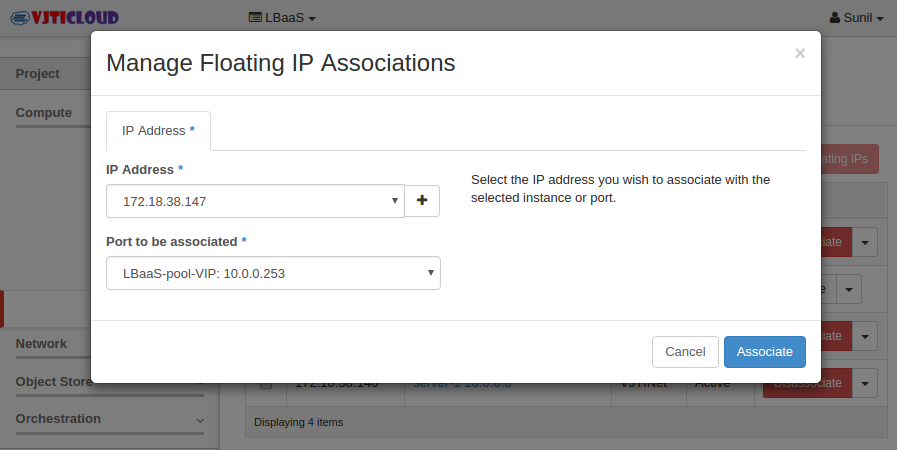then see that floating IP is mapped to your Load Balancer VIP
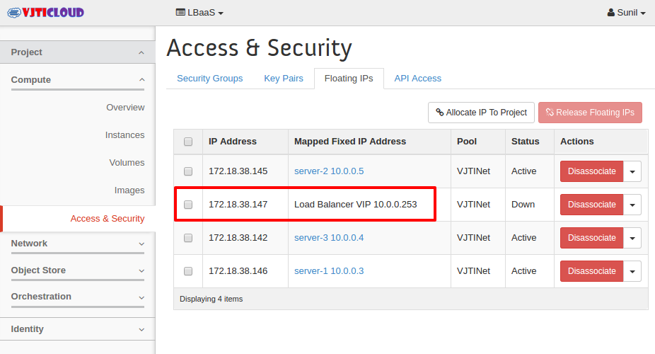Now you can access your web server via ip address of load balancer.
{kind=link}
{kind=link}
{kind=link}
{kind=link}
{kind=link}
{kind=link}
{kind=link}
{kind=link}
Add a Health Monitor¶
An important feature of a load balancer is that it can determine if a server has failed and route traffic away from it. The OpenStack Neutron LBaaS supports this functionality by allowing you to define Monitors in the Monitor tab of the Load Balancer page. Select “Add Monitor” and then specify a monitor that you would like to add. For example, you can define a monitor that GETs a page every minute and if that fails twice, stop sending traffic to that instance:
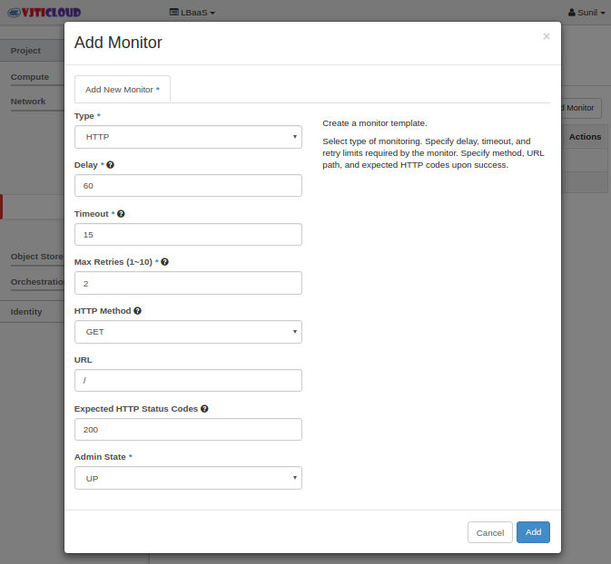Once a monitor is defined, you associate it with your pool via the “Associate Monitor” item in the menu to the left of your pool in the Pools tab. You now have a load balancer with back end instances that are being checked to ensure that they are operating propertly.
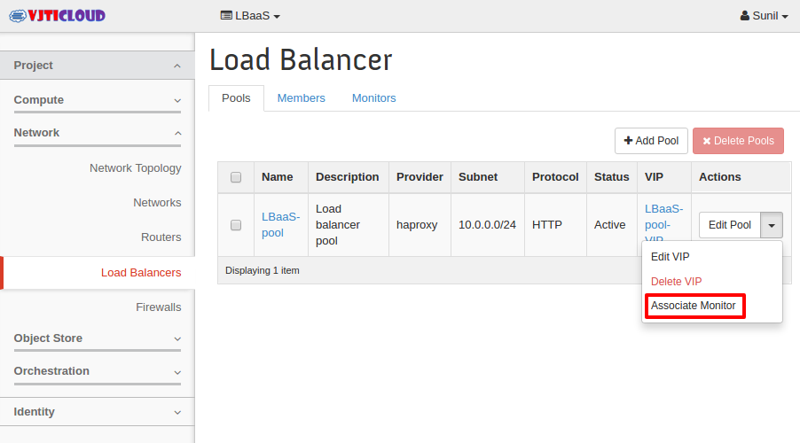and associate it
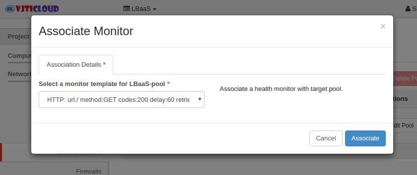
{kind=link}
{kind=link}
{kind=link}